Yapay Zeka Otomasyon Ajansları
1) AI Automation Agency Nedir?
AI automation ajansları, işletmeler ve bireyler için otomasyon çözümleri sunan ajanslardır. Bu ajanslar, yapay zeka (AI) teknolojilerini kullanarak rutin ve zaman alıcı işleri otomatikleştirir, iş süreçlerini optimize eder ve verimliliği artırır.
İş süreçlerinin otomasyonuna örnek olarak müşteri hizmetleri botları, veri girişi otomasyonu ve e-posta yanıtlama otomasyonu gibi çözümler verilebilir. Bunun yanı sıra, veri analizi ve raporlaması, veri tahmini yapma gibi konularda da hizmet sunarlar.
Beni bu konuda araştırma yapmaya iten şey aslında bu otomasyon süreçlerini yaparken kullandıkları teknolojiler ve araçlar oldu. Çünkü bu ajanslar sıfırdan yapay zeka yazmak yerine, hali hazırda olan sistemleri kullanıyorlar. Örneğin, ChatGPT API gibi önceden eğitilmiş yapay zeka modellerini entegre ederek müşterilere özelleştirilmiş çözümler sunuyorlar.
Sadece bu da değil, Voiceflow, Make.com ve benzeri araçlar sayesinde low-code ve no-code teknikleri kullanılarak hızlı ve verimli çözümler üretilebiliyor. Voiceflow, sesli asistanlar ve chatbotlar için; Make.com ise veri entegrasyonu ve iş akışı otomasyonu için kullanılmaktadır.
Benim de bu araştırma boyunca yoğunlaştığım iki program Voiceflow ve Make.com idi. Bu sistemleri kurcalayarak birkaç basit/orta projeler yapmaya çalıştım ve mantığını anlamaya çalıştım.
2) Make.com'da yaptığım iki ufak proje
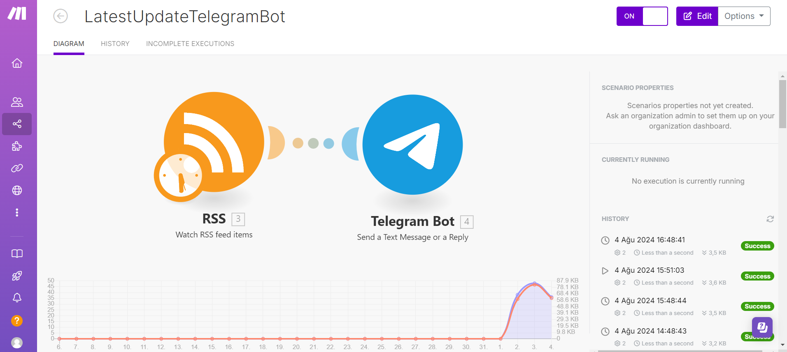
A) Modüle RSS eklentisini ekledim.
RSS yeni eklenen içeriğin takip edilmesinde yardımcı olan bir araçtır.
URL olarak bir haber sitesinin rss uzantılı linki verdim ki güncel haberler gelebilsin
B) Telegram botu aracını ekledim ve bunu RSS ile birleştirdim
Bu botu telegramın kendi botu BotFather üzerinden kendiniz oluşturmanız gerekiyor
Oluşturduktan sonra token bilgisini Connection kısmına girdikten sonra bağlantı sağlanmış oluyor
Sonra mesajların atalacağı kanalın id'sini ve text bilgilerini girdikten sonra her şey hazır olmuş oluyor
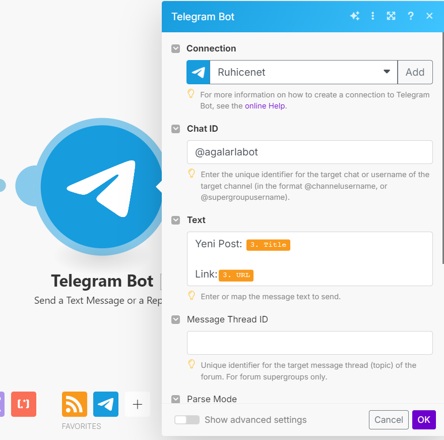C) Start tuşuna basınca çalışmaya hazır
Make.com anasayfasında zaman aralığı ayarlanabilir ve istediğiniz bir saat aralığı ayarlanabilir
EXTRA) Belirli bir süre aralığında fotoğraf atan bot
Make.com anasayfasında zaman aralığı ayarlanabilir ve istediğiniz bir saat aralığı ayarlanabilir
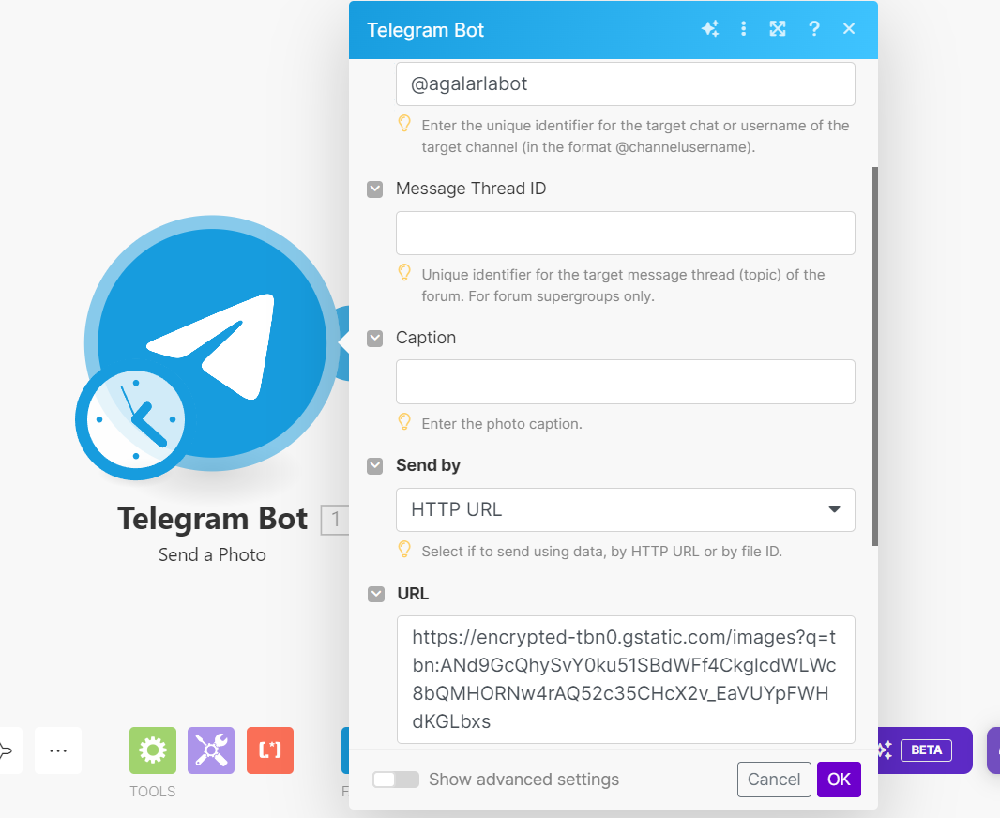 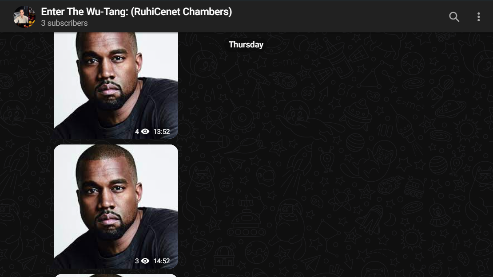3) VoiceFlow üzerinden yaptığım projeler
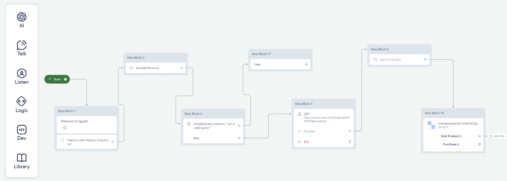
3-A) Proje Amacı
Kullanıcı Chatbot'a aradığı ürünün özelliklerini yazacak ve chatbot bu yazdığı ürünü airtable database'inde bulucak ve kullanıcıya getirecek
1) İlk Blok: Greetings
Chatbot kullanıcıyı karşılayacak ve kullanıcıdan input girilmesi beklenilicek
Burda text ve capture bloklarını kullandım
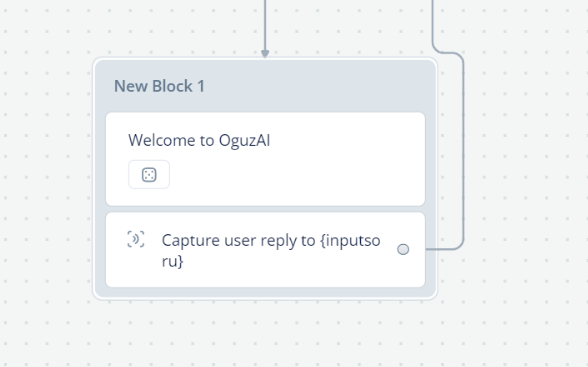2) İkinci Blok: Formül
Şimdi sıkıntı şu müşteri istediği ürünü yazacak fakat airtable bunu anlaması için kullanıcının attığı yazının bir airtable sorgusuna çevrilmesi gerekli
Burda Set AI bloğunu kullandım kullandım
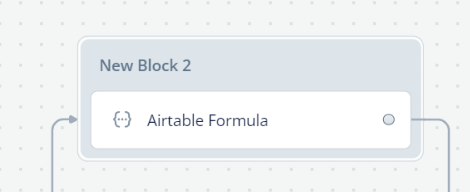Prompt kısmında yapay zekaya ne yapması gerektiğini yazmanız gerekir.
Alttaki System kısmında da yapay zekaya ne olduğunu anlatmanız gerekir.
Burada yapay zekaya gelen inputları bir airtable sorgusuna çevirmesi gerektiğini yazdım.
Örnek olarak ona bunu verdim:
"Customer: I'm looking for a Acer 16GB ram laptop
AI: AND({Company} = 'Acer', {Ram} = '16G')"
Bu örnekle kullanıcıdan aldığı metni nasıl bir şekilde çevirmesi gerektiğini öğrettim. Aldığı metni sorguya dönüştürüp Airtable Query adında bir değişkene atıyor.
3) Üçüncü Blok: Kontrol
Kontrol bloğu Airtable sorgusu değişkeni geçerli mi diye kontrol ediyor
Burada Condition bloğu kullandım
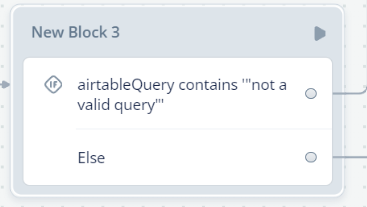4) Dördüncü Blok: Airtable Bağlantısı
Get API bloğunu kullanarak bağlantı kuruyorum
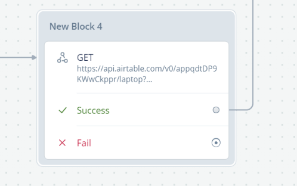Airtable database'inize ulaşmak için linkini ve token girmeniz gerekir.
Link kısmındaki filterByFormula komutunu airtableQuery değişkenine atıyoruz.
Bu şekilde kullanıcının istediği ürüne göre bi filtre uyguluyor ve onları getiriyor
Sonrasında getirilen Json dosyasından istediğimiz sütunları seçip hepsini bir değişkene atıyorum.
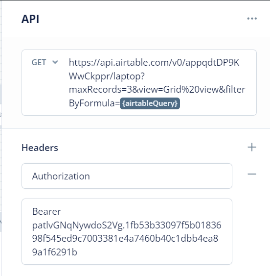 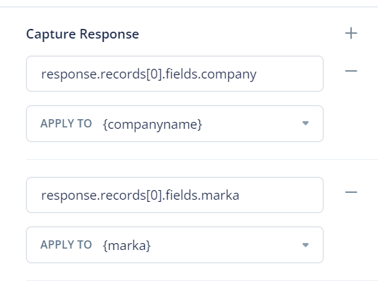5) Beşinci Blok: Kontrol 2
Airtable'dan çektiğim şirket ismi değişkenini kontrol ediyorum eğer boş ise hata verip "bizde böyle bir ürün bulunmamaktadır" yazısını yazdırıyorum

6) Altıncı Blok: End Of Project
Son blok, bir Carosuel bloğudur.
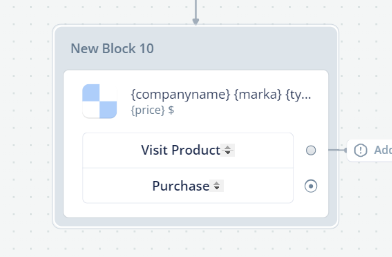Yazdırmak istediğim özelliklerini değişkenlerini girdim eğer çalıştığım veri setinde
ürünün link ya da görseli ile ilgili bir bilgi olsaydı onu da eklerdim fakat olmadığı
için eklemedim sadece ürünün bilgileri ve fiyatı çıkıyor
7) Final: Output
Eğer kullanıcının istediği ürün airtable'da varsa ürünü bilgilerini ve fiyatını getiriyor
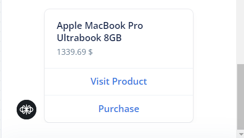3-B) İkinci Proje
Yukarda yaptığım projenin aynısı bir Amazon Satış veri setinde denedim. Yapı olarak ikisi de aynı, farklı olan şeyler formül içindeki promptlar. İsabetli çalışan bir ürün elde edemedim fakat düzgün çalıştığı zamanlarda ekrana sadece ürün bilgilerini getirmekle kalmıyor ürünün fotoğrafını ve ürüne gidebilceğiniz bir linkte mevcut.
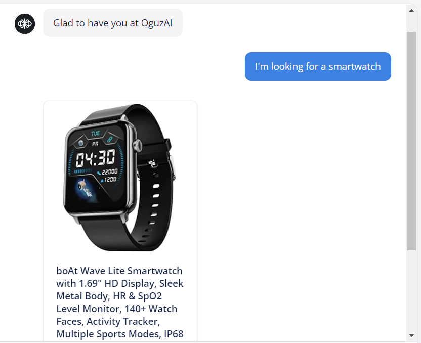